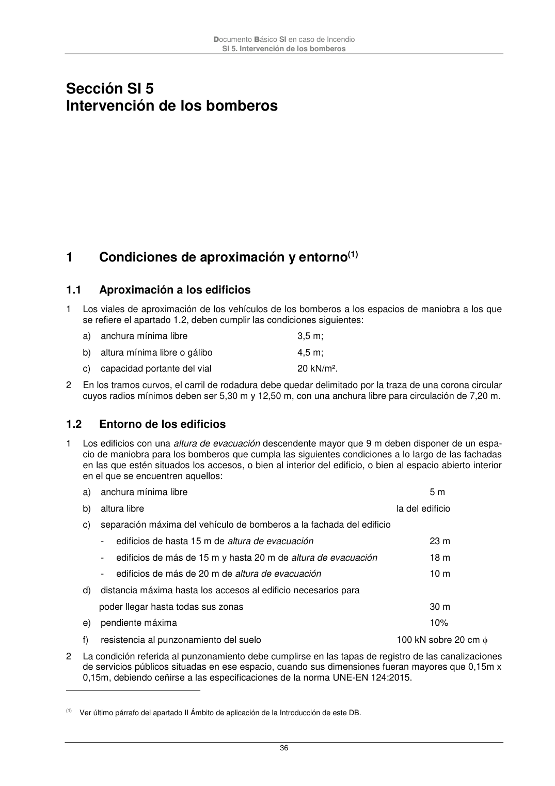

DB-SI · 1.2 Entorno de los edificios · versión 2025-03-04 · capa oficial
Formatos: JSON compacto · Markdown · PDF fuente
Ámbito del documento · texto del ámbito · documento y tablas
ID técnico a0078 · PDF pág. 36-37 · jerarquía no validada por persona · contrastado con el literal de la página 36 (marcador PDF); no validado por persona · padre: a0076
Entorno de los edificios 1 Los edificios con una altura de evacuación descendente mayor que 9 m deben disponer de un espa- cio de maniobra para los bomberos que cumpla las siguientes condiciones a lo largo de las fachadas en las que estén situados los accesos, o bien al interior del edificio, o bien al espacio abierto interior en el que se encuentren aquellos: a) anchura mínima libre 5 m b) altura libre la del edificio c) separación máxima del vehículo de bomberos a la fachada del edificio - edificios de hasta 15 m de altura de evacuación 23 m - edificios de más de 15 m y hasta 20 m de altura de evacuación 18 m - edificios de más de 20 m de altura de evacuación 10 m d) distancia máxima hasta los accesos al edificio necesarios para poder llegar hasta todas sus zonas 30 m e) pendiente máxima 10% f) resistencia al punzonamiento del suelo 100 kN sobre 20 cm 2 La condición referida al punzonamiento debe cumplirse en las tapas de registro de las canalizaciones de servicios públicos situadas en ese espacio, cuando sus dimensiones fueran mayores que 0,15m x 0,15m, debiendo ceñirse a las especificaciones de la norma UNE-EN 124:2015. (1) Ver último párrafo del apartado II Ámbito de aplicación de la Introducción de este DB. Documento Básico SI en caso de Incendio SI 5. Intervención de los bomberos 37 3 El espacio de maniobra debe mantenerse libre de mobiliario urbano, arbolado, jardines, mojones u otros obstáculos. De igual forma, donde se prevea el acceso a una fachada con escaleras o plata- formas hidráulicas, se evitarán elementos tales como cables eléctricos aéreos o ramas de árboles que puedan interferir con las escaleras, etc. 4 En el caso de que el edificio esté equipado con columna seca debe haber acceso para un equipo de bombeo a menos de 18 m de cada punto de conexión a ella. El punto de conexión será visible desde el camión de bombeo. 5 En las vías de acceso sin salida de más de 20 m de largo se dispondrá de un espacio suficiente para la maniobra de los vehículos del servicio de extinción de incendios. 6 En zonas edificadas limítrofes o interiores a áreas forestales, deben cumplirse las condiciones si- guientes: a) Debe haber una franja de 25 m de anchura separando la zona edificada de la forestal, libre de arbustos o vegetación que pueda propagar un incendio del área forestal así como un camino pe- rimetral de 5 m, que podrá estar incluido en la citada franja; b) La zona edificada o urbanizada debe disponer preferentemente de dos vías de acceso alternati- vas, cada una de las cuales debe cumplir las condiciones expuestas en el apartado 1.1; c) Cuando no se pueda disponer de las dos vías alternativas indicadas en el párrafo anterior, el ac- ceso único debe finalizar en un fondo de saco de forma circular de 12,50 m de radio, en el que se cumplan las condiciones expresadas en el primer párrafo de este apartado. 2

PDF fuente redistribuible: copia fiel enlazada en esta página (SHA256 verificado).